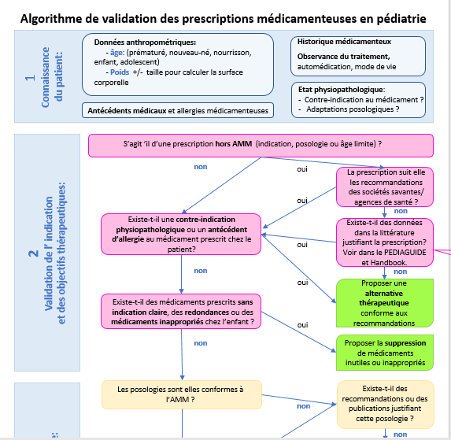
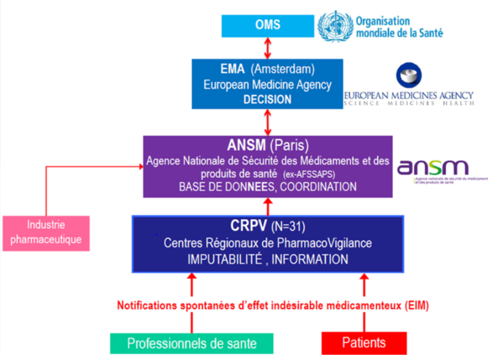
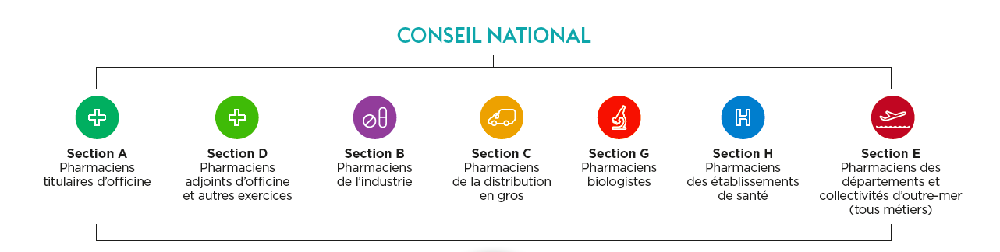

UE4: Dispensation des Médicaments et Autres Produits de Santé Iatrogénie Médicamenteuse
Table of Contents
- 1. Dispensation En Pédiatrie
- 2. Voies d'Administration
- 3. Posologies
- 4. Erreurs d'Administration
- 5. Effets Indésirables
- 6. Formes Pharmaceutiques: Mésusage
- 7. Prescription
- 8. Médicaments
- 9. Algorithme de Validation
- 10. Interactions Médicamenteuses
- 11. Rédiger un Plan de Prise
- 12. Phase IV
- 13. Pharmacovigilance
- 14. Stupéfiants
- 15. Assimilés Stupéfiants
- 16. Anxiolytiques et Hypnotiques
- 17. Médicaments d'Exception
- 18. Prescription Compassionnelle
- 19. Prescription Hospitalière
- 20. Médicaments Nécessitant une Surveillance Particulière
- 21. Médicaments Dérivés du Sang
- 22. Médicaments à Usage Professionnel
- 23. L'Ordre National des Pharmaciens
1. Dispensation En Pédiatrie
1.1. Classes d'âge
| Mois/Année | 0-1m | 1m-2a | 2-12a | 12-15a |
| Classe | NN1 | Nourisson | Enfant | Ado |
1.2. Demographie

Figure 1: La classe 0-16 ans représente 20% de la population européenne.
1.3. Place du Médicament en Pédiatrie
1.3.1. Rôle de l'ANSM/HAS
- PIPs 2
- Avis scientifiques
- AMM
- Accès précoce
- Accès compassionnel
- Préparations hospitalières pédiatriques
1.3.2. Règlements Pédiatriques Européens
- Facilitent le développement et l'accès des médicaments pour la population pédiatrique.
- Assurer un haut degré de qualité quand à la recherche, l'évaluation, et l'AMM des médicaments à usage pédiatrique.
- Améliorer la mise à disposition d'informations sur l'utilisation des médicaments chez les enfants
- Eviter de soumettre la population pédiatrique à des essais cliniques inutiles.
1.4. Particularités pharmacocinétiques
1.4.1. Absorption
- per os
NN Nourrissons Enfants Temps de vidange gastrique Retardé Augmenté Légèrement augmenté pH gastrique 5 4-2 3 Motilité intestinale Retardée Augmentée Légèrement augmentée Fonction biliaire Immature Normale Normale Enzymes intestinales: CYP1A1, CYP 3A PgP Immature Immature Normale Les acides faibles ont une biodisponibilité réduite: Phénobarbital, Phénitoïne
Les molécules instables en milieu acide, et molécules basiques ont une biodisponibilité augmentée: Benzylpénicilline, Erythromycine
- cutanée
- Couche cornée mince, peu kératinisée
- Vascularisation et hydratation abondante
- Large surface cutanée
→ Résorption cutanée importante: Iode, Vitamine A, Lidocaïne.
Il faudra faire attention au risque de toxicité
1.4.2. Distribution
Pour les médicaments hydrophiles:
- On aura un Vd 3 augmenté, donc une concentration inférieure par rapport à un adulte.
La dose de charge sera donc relativement plus importante.
| NN | 1 ans | 4 ans | Puberté | Adulte | |
|---|---|---|---|---|---|
| Eautotale | 75% | 60% | 60% | ||
| Eauextracell | 45% | 25% | 15%-20% | 20% | |
| Eaucell | 33% | 35% | 40% | 40% | |
| Graisses | 15% | 25% | 10% | 18% | 16%-18% |
1.4.3. Métabolisme
| Nouveau-né | Enfant | |
|---|---|---|
| CYP | Diminuée | Augmentée |
| Clairance | Diminuée | Augmentée |
| Résorption | Diminuée | Augmentée |
| Elimination | Diminuée | Augmentée |
| Métabolisme | Hypométaboliseur | Hypermétaboliseur |
| Conseils | Espacer les doses | Augmenter les doses |
| Rapprocher les doses | Diminuer les doses |
1.4.4. Elimination
L'élimination tend vers les valeurs adultes à 1 ans.
- Pour les nourrissons de moins d'un ans:
- Augmentation de la demi-vie
- Diminution de la clairance rénale
- Toxicité accrue
- Aminosides
- Pénicillines
- Céphalosporines
- Médicaments altérant le DFG6
- AINS
- Indométacine
- Ibuprofène
- Médicaments altérant la maturation rénale
- Corticostéroïdes
1.5. Spécificités Néphrologiques
- Clairance:
- Le calcul du DFG se fait par la formule de Schwarz 7
Diurèse:
Naissance 2 ans 8 ans Volume 30-60 mL 1 L Valeurs Adultes
1.6. Spécificités hématologiques
| Erythrocytes | Leucocytes | Thrombocytes | |
| NN | 18 g/dL | 18 G/L | Adulte |
| 1-3 mois | 10.5 - 13.5 g/dL | Adulte |
2. Voies d'Administration
- IM
- Douloureuse
- IV
- Toxicité
- Difficile
- Iatrogéne
- Peu adaptée
- Rectale
- Résorption aléatoire
- Orale
- Comprimés et gélules à partir de 7 ans
- Solutions/suspensions buvables de préférence
3. Posologies
- Posologie de l'enfant: \[ P_{enfant} = \frac{ S_{corporelle} \times D_{adulte} }{1.75} \]
- Modifier selon les résultats biologiques:
- Fonctions rénales
- Ionogramme sanguin
- Par rapport aux indications:
4. Erreurs d'Administration
- IV: 48% Facteur 10-100
- Formes buvables: Confusion mg/mL et mg/kg
- Forme galénique non adaptée
- Application cutanée: passage systémique
5. Effets Indésirables
5.1. Croissance
- Fluoroquinolones: contre-indiquées si < 8 ans sauf mucoviscidose
- Corticoïdes: ralentissement de la croissance
- Tétracyclines: dischromie et hypoplasie dentaire
5.2. Reye Syndrome
- Associé à l'Aspirine si < 16 ans
- Description: Atteinte cérébrale non-inflammatoire et hépatique
5.3. Précautions et Contre-indications
- Acide benzoïque CI < 2 ans: Risque d'ictère car fortement lié aux PP8
- Camphre: CI < 30 mois Risque de convulsions
- Acide borique et borate de Sodium (Talc, Cold Crean): CI < 3 ans Risque de convulsions
6. Formes Pharmaceutiques: Mésusage

6.1. Formes Orales Liquides
- Flacon multidose
- Utilisation de présentation adulte
- Instrument de mesure non adapté
- Conservation
- Absence de date d'ouverture
- Prescription en unité différente de l'unité indiquée
6.2. Formes Sèches
- Prescription de demi ou quart de comprimé
- Forme galénique inadaptée à l'âge
- Déconditionnement de médicament
- Ouverture des gélules
- Dispersion dans nourriture semi-solide
- Dissolution dans un liquide
- Broyage des comprimés
- Fractionnement
7. Prescription
- Date de la prescription
- Identification du prescripteur
- Signature
- Identification du service
- Identification du patient
- Nom
- Prénom
- Sexe
- DDN9
- Pédiatrie:
- Poids
- Si nécessaire:
- Taille
- Surface corporelle
- Identification du médicament
- DCI
- Galénique
- Dosage
- Posologie
- Administration
- Mode d'emploi
- Durée de traitement
- Allergies
8. Médicaments
- Indication précise
- Bon choix
- Posologie correcte
- Surtout si index thérapeutique étroit
- AVK
- Acide Valproïque
- Théophylline
- Surtout si index thérapeutique étroit
- Interactions
- Pharmacologiques
- Physicochimiques
- Modalités d'administration:
- Instruments de mesure
- Pendant/En dehors des repas
- Plans de prise
- Conseils
- Prescriptions hors-AMM
9. Algorithme de Validation

Figure 2: L'analyse se fait selon un algorithme de validation spécifique aux populations pédiatriques.
10. Interactions Médicamenteuses
- Substances actives ⇔ substances auxilliaires
- Molécules ⇔ test biologiques
- Molécules ⇔ alimentation
11. Rédiger un Plan de Prise

12. Phase IV
La phase IV est la réévaluation de la sécurité et de l'efficacité d'un médicament après sa commercialisation.
13. Pharmacovigilance
13.1. Médicaments Concernés
- AMM
- ATU
- MDS
- Homéopatie
13.2. A Qui Déclarer?
- CRPV 12
- Industrie pharmaceutique (facultative)

14. Stupéfiants
Une prescription de stupéfiant doit contenir la dose et la posologie. Le patient à 72 heures pour recevoir une dispensation complète de son traitement13.
Le pharmacien doit les stocker dans une armoire fermée à clef différente de celle des stupéfiants détenus à l'officine
Le transport à l'étranger pour un patient doit se faire par une autorisation de transport de l'ARS locale au médecin prescripteur.
La morphine injectable peut être prescripte pour 7 jours maximum.
La délivrance de FENTANYL adm: patch, buccale, ou nasale pour les douleurs chroniques doit être fractionnée sauf mention expresse du prescripteur
La Méthadone peut être prescrite jusqu'à 28 jours, et délivrée par fractions de 7 jours sauf mention expresse du prescripteur.
14.1. Ordonnance
- Sécurisée
- Doit afficher en toutes lettres:
- le nombre d'unité par prise
- Nombre de prise
- dosage

14.2. Délivrance
| DCI | Fractionnement | Exemples |
|---|---|---|
| Fentanyl transdermique | 14 j | Durogesic, Matrifen |
| Fentanyl transmuqueuse | 7 j | Actiq, Effentora, Abstral, Instanyl, Pecfent |
| Methadone | 7 j |
14.3. Mentions à Apposer
- Tampon de l'officine
- N° enregistrement sur l'ordonnancier
- Date de délivrance
- Nom de la spécialité délivrée
- Quantité délivrée en unité de prise
14.4. Comptabilité et Traçabilité
- Comptabilité journalière
- Balance mensuelle
- Inventaire annuel du stock
- Conservation des ordonnances pendant 10 ans
15. Assimilés Stupéfiants
16. Anxiolytiques et Hypnotiques
16.1. Première délivrance
Elle se fait uniquement sur une ordonnance datant de moins de 3 mois.
16.2. Prescription et Règles de Délivrance
| Hypnotiques | 4 semaines |
| Anxiolytiques | 12 semaines |
Il est interdit de renouveller de manière exceptionnelle un anxiolytique ou hypnotique
17. Médicaments d'Exception
Ce sont des spécialités remboursées uniquement pour certaines indications. Leur prescription se fait alors sur une ordonnance 4 volets16.

17.1. Mentions à Apposer
- Tampon de l'officine
- N° RPPS du dispensateur
- Date de délivrance
- Nom de la spécialité délivrée
- Quantité délivrée en unité de prise
17.2. Archivage
- Volet 4 archivé par le pharmacien
- Durée de conservation de 3 ans.
18. Prescription Compassionnelle
Un CPC17 peut être mis en place pour une durée maximale de 3 ans. La spécialité sela alors prise en charge par la sécurité sociale.
Le CPC permet d'encadrer de manière ponctuelle l'utilisation d'un médicament hors AMM. Au regard des données recueillies, le CPC peut conduire à autoriser la modification de l'AMM du médicament.
19. Prescription Hospitalière
19.1. Prescription Initiale Hospitalière
La dispensation se fait sur présentation concomitante de l'ordonnance hospitalière initiale. Le renouvellement se fait par tout prescripteur sauf restriction particulières (spécialistes)
19.2. Prescription Réservée à Certains Spécialites
Il est important de s'assurer de l'habilitation du prescripteur.
20. Médicaments Nécessitant une Surveillance Particulière
Les restrictions sont dues aux potentiels effets indésirables graves qui peuvent apparaître lors de l'emploi de la spécialité.
20.1. Condition de Prescription
Subordonnée à la réalisation d'examens périodiques du patient. La mise à disposition d'un support d'information/de suivi de traitement peut être imposée lors de la mise sur le marché du médicament.
20.2. Conditions de Délivrance
Le pharmacien doit s'assurer l'habilitation du prescripteur à prescrire le produit, ou le cas échéant de la présence sur l'ordonnance des mentions obligatoires prévues par l'AMM.
21. Médicaments Dérivés du Sang
Prescription: ordonnance classique
La dispensation d'un MDS est retranscrite dans un registre paraphé par le maire ou le commissaire de police.
21.1. Traçabilité
Les informations suivantes doivent figurer sur le registre spécial :
- Nom et adresse du prescripteur
- Nom, adresse et date de naissance du patient
- Date de délivrance
- Dénomination du médicament
- Quantité délivrée
- Les informations figurant sur l'étiquette de traçabilité détachable du conditionnement
extérieur
22. Médicaments à Usage Professionnel
L'AMM peut prévoir la délivrance d'un produit qu'à des professionnels de santé habilités à la prescrire et à l'administrer. Cette sécurité est liée à la nécessité d'une détention et d'une manipulation exclusive par un professionnel de santé.
22.1. Ordonnance
- Nom
- Qualité
- RPPS
- Adresse
Date
En plus,
- Dénomination
- Quantité
- Mention: "Usage Professionnel"
23. L'Ordre National des Pharmaciens

23.1. Missions
- Garantir le respect des devoirs professionnels
- Protéger l'intégrité et l'indépendance de la profession
- Garantir la compétence des pharmaciens
- Contribuer à promouvoir la santé publique, la qualité des soins notamment la sécurité des actes professionnels.
- S'assurer que l'ensemble des pharmaciens respecte son obligation de développement professionnel continu
Footnotes:
Nouveau-né
Plan d'investigation pédiatrique
Volume de distribution
Protéines plasmatiques
Barrière hémato-encéphalique
Débit de filtration glomérulaire
\[DFG = k \times \frac{T}{Créatinémie}\]
Protéines plasmatiques
Date de naissance
Effets indésirables
Intéractions médicamenteuses
Centre Régional de Pharmacovigilance
Sinon il faudra déconditionner
Pas de déconditionnement possible.
Assimilé stupéfiant
Conforme au Cerfa 12708*02
Prescription Compassionnelle